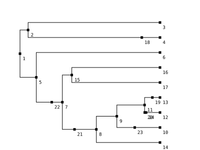
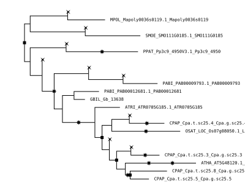

Manual
Below the major components of the Whale library are discussed.
Sliced species tree
The ALE approach to probabilistic gene tree - species tree reconciliation uses a discretization of the branches of the species tree into small time intervals. This 'sliced' species tree defines the main structure of the model.
julia> st = Whale.example_tree()
SlicedTree(9, 17, 7)
julia> st.tree
Phylogenetic tree with 24 nodes and 23 branches
julia> st.leaves
Dict{Int64,String} with 9 entries:
4 => "PPAT"
13 => "CPAP"
10 => "OSAT"
14 => "ATRI"
3 => "MPOL"
16 => "GBIL"
17 => "PABI"
6 => "SMOE"
12 => "ATHA"
julia> wgds(st) # WGD ID → WGD node → q index
PPAT → node 18 → q1
CPAP → node 19 → q2
BETA → node 20 → q3
ANGI → node 21 → q4
SEED → node 22 → q5
MONO → node 23 → q6
ALPH → node 24 → q7
julia> st[3, 4] # length of 4th slice in branch 3
0.049499999999999995
julia> nslices(st, 3) # number of slices in branch 3
97To get a tree in Newick format into a SlicedTree, one can simply use SlicedTree(tree_file).
Note that the tree is assumed to be ultrametric and that you might need to change the default Δt value for your purposes. WGDs can be specified by using a configuration dictionary (see SlicedTree).
For visualizing tree structures, the PalmTree library can be used. It is often useful for example to plot the tree with internal node labels for specifying models in Whale
julia> using PalmTree
julia> drawtree(st, nodelabels=true)Here, nodes 18 to 24 are WGD 'nodes', marking hypothetical WGDs along the sliced species tree.

Rate indices
The SlicedTree structure has two fields that store mappings from nodes/branches in the tree to indices in hypothetical parameter vectors. The qindex field is a mapping (Dict) from WGD nodes to indiced for a vector of retention rates, whereas the rindex serves as a mapping from species tree branches to indices for the duplication and loss rate vectors. The default rindex has a different index for each branch of the species tree, and with the same index for the part of a branch before and after a WGD (note that branches are identified by the index of there downstream (leafward) node).
julia> st = Whale.example_tree();
julia> st.qindex
Dict{Int64,Int64} with 7 entries:
20 => 3
23 => 6
24 => 7
19 => 2
21 => 4
22 => 5
18 => 1
julia> st.rindex
Dict{Int64,Int64} with 24 entries:
18 => 4
2 => 2
16 => 16
11 => 11
21 => 8
7 => 7
9 => 9
10 => 10
19 => 13
17 => 17
8 => 8
22 => 7
6 => 6
24 => 12
4 => 4
3 => 3
5 => 5
20 => 12
23 => 10
⋮ => ⋮In this example, branches 20, 24 and 12 (which are all part of the same species tree branch but refer to different segments marked by WGD nodes) all point to index 12, which means that they are associated with the same duplication and loss rates.
The rindex can be modified to specify arbitrary rate models (for instance fixing a particular clade to a one shared duplication and loss rate). In order to specify a consjuliatant-rates model, one can do
julia> st = Whale.example_tree();
julia> set_constantrates!(st)
julia> st.rindex
Dict{Int64,Int64} with 24 entries:
18 => 1
2 => 1
16 => 1
11 => 1
21 => 1
7 => 1
9 => 1
10 => 1
19 => 1
17 => 1
8 => 1
22 => 1
6 => 1
24 => 1
4 => 1
3 => 1
5 => 1
20 => 1
23 => 1
⋮ => ⋮Conditional clade distribution(s)
The conditional clade distributions (CCDs) for a set of gene families provide the main input data (observations) for Whale analyses. These can be read from .ale files generated by ALEobserve. The read_ale function accepts either a single .ale file, a text file with on each line the path to a .ale file or a directory of .ale files. When an empty file is provided, a dummy CCD object will be created (which is useful when one wants to run an MCMC chain without data to check the prior specification).
julia> st = Whale.example_tree();
julia> ccd = read_ale("../example/example-ale/", st)
[ Info: .. read 12 ALE files
12-element DistributedArrays.DArray{CCD,1,Array{CCD,1}}:
CCD{Float64,PhyloTrees.RecTree}(13 taxa, 83 clades, 5001 samples)
CCD{Float64,PhyloTrees.RecTree}(13 taxa, 55 clades, 5001 samples)
CCD{Float64,PhyloTrees.RecTree}(13 taxa, 89 clades, 5001 samples)
CCD{Float64,PhyloTrees.RecTree}(13 taxa, 131 clades, 5001 samples)
CCD{Float64,PhyloTrees.RecTree}(13 taxa, 107 clades, 5001 samples)
CCD{Float64,PhyloTrees.RecTree}(13 taxa, 59 clades, 5001 samples)
CCD{Float64,PhyloTrees.RecTree}(13 taxa, 53 clades, 5001 samples)
CCD{Float64,PhyloTrees.RecTree}(13 taxa, 83 clades, 5001 samples)
CCD{Float64,PhyloTrees.RecTree}(13 taxa, 59 clades, 5001 samples)
CCD{Float64,PhyloTrees.RecTree}(13 taxa, 95 clades, 5001 samples)
CCD{Float64,PhyloTrees.RecTree}(13 taxa, 67 clades, 5001 samples)
CCD{Float64,PhyloTrees.RecTree}(13 taxa, 65 clades, 5001 samples)By default, read_ale will distribute the resulting CCD array over all available processors.
The WhaleModel
The last object of importance to do inference with Whale is the WhaleModel type. This structure is used for computing the probability of observing the data conditional on the model and its parameters (logpdf).
julia> st = Whale.example_tree();
julia> ccd = read_ale("../example/example-ale/", st);
[ Info: .. read 12 ALE files
julia> w = WhaleModel(st)
WhaleModel{Float64,CCD}(
λ: [0.2, 0.2, 0.2, 0.2, 0.2, 0.2, 0.2, 0.2, 0.2, 0.2, 0.2, 0.2, 0.2, 0.2, 0.2, 0.2, 0.2]
μ: [0.3, 0.3, 0.3, 0.3, 0.3, 0.3, 0.3, 0.3, 0.3, 0.3, 0.3, 0.3, 0.3, 0.3, 0.3, 0.3, 0.3]
q: [0.2, 0.2, 0.2, 0.2, 0.2, 0.2, 0.2]
η: 0.9
)
julia> logpdf(w, ccd[1]) # single CCD
-32.70481615232666
julia> logpdf(w, ccd) # multiple CCDs, distributed by default
-298.98170493684256
julia> w = WhaleModel(st, rand(17), rand(17), rand(7), 0.66) # full constructor
WhaleModel{Float64,CCD}(
λ: [0.590845, 0.766797, 0.566237, 0.460085, 0.794026, 0.854147, 0.200586, 0.298614, 0.246837, 0.579672, 0.648882, 0.0109059, 0.066423, 0.956753, 0.646691, 0.112486, 0.276021]
μ: [0.651664, 0.0566425, 0.842714, 0.950498, 0.96467, 0.945775, 0.789904, 0.82116, 0.0341601, 0.0945445, 0.314926, 0.12781, 0.374187, 0.931115, 0.438939, 0.246862, 0.0118196]
q: [0.0460428, 0.496169, 0.732, 0.299058, 0.449182, 0.875096, 0.0462887]
η: 0.66
)
julia> logpdf(w, ccd)
-370.067694892539An informative description of the model can be printed using describe
julia> st = Whale.example_tree();
julia> w = WhaleModel(st);
julia> describe(w)
Leaves
======
4 → PPAT
13 → CPAP
10 → OSAT
14 → ATRI
3 → MPOL
16 → GBIL
17 → PABI
6 → SMOE
12 → ATHA
Rates (λ, μ)
============
3 | λ, μ = 0.2,0.3 | (3)
4 | λ, μ = 0.2,0.3 | (4)
18 | λ, μ = 0.2,0.3 | (4)
2 | λ, μ = 0.2,0.3 | (4,3)
6 | λ, μ = 0.2,0.3 | (6)
16 | λ, μ = 0.2,0.3 | (16)
17 | λ, μ = 0.2,0.3 | (17)
15 | λ, μ = 0.2,0.3 | (16,17)
13 | λ, μ = 0.2,0.3 | (13)
19 | λ, μ = 0.2,0.3 | (13)
12 | λ, μ = 0.2,0.3 | (12)
24 | λ, μ = 0.2,0.3 | (12)
20 | λ, μ = 0.2,0.3 | (12)
11 | λ, μ = 0.2,0.3 | (13,12)
10 | λ, μ = 0.2,0.3 | (10)
23 | λ, μ = 0.2,0.3 | (10)
9 | λ, μ = 0.2,0.3 | (13,10,12)
14 | λ, μ = 0.2,0.3 | (14)
8 | λ, μ = 0.2,0.3 | (13,10,14,12)
21 | λ, μ = 0.2,0.3 | (13,10,14,12)
7 | λ, μ = 0.2,0.3 | (13,10,14,16,17,12)
22 | λ, μ = 0.2,0.3 | (13,10,14,16,17,12)
5 | λ, μ = 0.2,0.3 | (13,10,14,16,17,6,12)
1 | λ, μ = 0.2,0.3 | (4,13,10,14,3,16,17,6,12)
WGDs (q)
========
20, q = 0.2
23, q = 0.2
24, q = 0.2
19, q = 0.2
21, q = 0.2
22, q = 0.2
18, q = 0.2
Other
=====
η = 0.9
cond = oibThe default initial rate values (~0.2) might not be appropriate for you data set and lead to numerical difficulties. Good initial values depend on the unit of time the branch lengths of the SlicedTree are expressed in.
Maximum likelihood estimation
Maximum likelihood estimation is performed using Optim.jl with ForwardDiff.jl automatic differentiation. By default the LBFGS optimizer is used, but other Optimizers from Optim work as well.
julia> st = Whale.example_tree();
julia> set_constantrates!(st)
julia> w = WhaleModel(st, 0.2, 0.3)
WhaleModel{Float64,CCD}(
λ: [0.2]
μ: [0.3]
q: [0.2, 0.2, 0.2, 0.2, 0.2, 0.2, 0.2]
η: 0.9
)
julia> mle(w, ccd)
Fminbox
-------
Initial mu = 0.0038519
Fminbox iteration 1
-------------------
Calling inner optimizer with mu = 0.0038519
(numbers below include barrier contribution)
Iter Function value Gradient norm
0 2.990420e+02 9.056730e+01
10 2.788972e+02 3.959786e+00
... # a lot more
, Results of Optimization Algorithm
* Algorithm: Fminbox with L-BFGS
* Starting Point: [0.2,0.3,0.2,0.2,0.2,0.2,0.2,0.2,0.2]
* Minimizer: [0.08839734901061815,0.15058644779285166, ...]
* Minimum: 2.787698e+02
* Iterations: 6
* Convergence: true
* |x - x'| ≤ 0.0e+00: true
|x - x'| = 0.00e+00
* |f(x) - f(x')| ≤ 0.0e+00 |f(x)|: true
|f(x) - f(x')| = 0.00e+00 |f(x)|
* |g(x)| ≤ 1.0e-08: false
|g(x)| = 1.38e+01
* Stopped by an increasing objective: true
* Reached Maximum Number of Iterations: false
* Objective Calls: 1755
* Gradient Calls: 1755)Bayesian inference
Currently, a model-specific MCMC algorithm (following an adaptive metropolis-within-Gibbs scheme) is used. Specifying arbitrary complex models in Turing.jl is possible, but currently does not support distributed likelihood evaluation and is therefore not yet possible for the kinds of problems tackled with Whale. This is a major goal for future developments.
Independent rates model
The default structure of the independent rates model is as follows.
But other distributions from the Distributions.jl library can be used. It is also possible to set parameters to fixed values. This is often desirable for either η or ν to ensure proper mixing of the chain.
julia> st = Whale.example_tree()
SlicedTree(9, 17, 7)
julia> w = WhaleChain(st, IRModel())
WhaleChain{IRModel{Distributions.InverseGamma{Float64},Distributions.Beta{Float64},Distributions.Exponential{Float64},Distributions.Exponential{Float64},Distributions.Beta{Float64}}}(SlicedTree(9, 17, 7))To run the MCMC simulation, use the mcmc! function
julia> chain = mcmc!(w, D, 100, show_every=10)The resulting Chains object is fairly intuitive, see the docs for MCMCChains.jl.
Autocorrelated rates model (Geometric Brownian motion)
The default structure is as above but with
julia> st = Whale.example_tree()
julia> w = WhaleChain(st, GBMModel(st))
julia> chain = mcmc!(w, D, 100, show_every=10)MCMC mixing issues
When WGD hypotheses and branch-wise rates across the tree are combined, MCMC in the Whale model can be quite sensitive to the (informative) priors used. For some data sets and prior settings the MCMC algorithm may have a hard time converging, or some parameter may wander of in an unrealistic area of parameter space. Since there is usually a lot of data, the influence of the prior is often very limited and the likelihood dominates the posterior (which is of course desirable), and it may be necessary to constrain some elements of the model to attain convergence.
Fixing η and/or ν
To prevent poor mixing in the MCMC, it is often necessary to fix the η and/or ν parameters. For η this is usually not very problematic, since it embodies already a distributional assumption that allows for uncertainty in prior beliefs (since it is the parameter of the geometric prior distribution on the number of lineages at the root). Choosing for instance η = 0.8, The probability of one lineage at the root is 0.8, two lineages 0.16, three lineages 0.032 etc.
Fixing ν (which controls the variation in duplication and loss rates across lineages) can be more troublesome since it is hard to specify a cogent prior. In the context of WGD inference however, the 'true' values of the duplication and loss rates might not matter too much, and we are mostly interested whether allowing more rate variation across the tree alters are posterior beliefs with regard to WGDs. When the goal is WGD inference, it is therefore advisable to run chains for different ν values and see whether this alters the posterior distributions for the retention rates. Often when the rates are constrained to be very similar across the tree (small ν values), some duplication/loss rate variation is captured by the retention rate, and in this case, for larger ν values, a previously significant non-zero retention rate might shift towards zero.
Below the chain is fixed for the parameter values η=0.9 and ν=0.1.
julia> st = Whale.example_tree()
julia> w = WhaleChain(st, IRModel(ν=Whale.ConstantDistribution(0.1), η=Whale.ConstantDistribution(0.9)))
julia> chain = mcmc!(w, D, 100, :ν, :η, show_every=10)Constraining rates on branches stemming from the root
Sometimes, in particular when there is a long outgroup branch (possibly with WGDs), it can help to constrain the branches stemming left and right from the root of the species tree to have the same duplication and loss rates. This can be done as follows:
julia> st = Whale.example_tree();
julia> set_equalrootrates!(st);
julia> st.rindex
Dict{Int64,Int64} with 24 entries:
18 => 4
2 => 2
16 => 15
11 => 10
21 => 7
7 => 6
9 => 8
10 => 9
19 => 12
17 => 16
8 => 7
22 => 6
6 => 5
24 => 11
4 => 4
3 => 3
5 => 2
20 => 11
23 => 9
⋮ => ⋮
Sampling from the prior
It is generally advisable to run a chain without data, to investigate the prior distributions one has assigned, and validate the correctness of the MCMC algorithm. This can be done as follows:
julia> st = Whale.example_tree()
julia> w = WhaleChain(st, IRModel())
julia> chain = mcmc!(w, 10000)Backtracking and consensus reconciled trees
Backtracking functionalities are still quite experimental and prone to change.
To backtrack reconciled trees for a particular CCD from a parameterized WhaleModel and compute majority-vote consensus trees one can use the following methods
julia> x # a single CCD
CCD{Float64,PhyloTrees.RecTree}(13 taxa, 83 clades, 5001 samples)
julia> w = WhaleModel(st, 0.2, 0.3)
WhaleModel{Float64,CCD}(
λ: [0.2, 0.2, 0.2, 0.2, 0.2, 0.2, 0.2, 0.2, 0.2, 0.2, 0.2, 0.2, 0.2, 0.2, 0.2, 0.2, 0.2]
μ: [0.3, 0.3, 0.3, 0.3, 0.3, 0.3, 0.3, 0.3, 0.3, 0.3, 0.3, 0.3, 0.3, 0.3, 0.3, 0.3, 0.3]
q: [0.2, 0.2, 0.2, 0.2, 0.2, 0.2, 0.2]
η: 0.9
)
julia> backtrack!(x, w, 100)
CCD{Float64,PhyloTrees.RecTree}(13 taxa, 83 clades, 5001 samples)
julia> drawtree(x.rectrs[1)
Currently the branch lengths in backtracked trees are not yet meaningful, although they are related to the branch lengths in the CCD.
Majority vote consensus trees can than be obtained
julia> contree = consensus(x, st)
Phylogenetic tree with 25 nodes and 24 branches, [...]
julia> drawtree(contree)
Reconciled trees are stored in the rectrs field of the CCD object. By default, during MCMC, every iteration a tree is sampled from the posterior predictive distribution.
julia> D = read_ale("example/example-ale/", st);
[ Info: .. read 12 ALE files
julia> w = WhaleChain(st, IRModel(st, 0.1, 0.9));
julia> chain = mcmc!(w, D, 100, :ν, :η);
julia> crts = consensus(D, st);(Consensus) reconciled trees can be written in a newick-like format, where support values x1-x2 with x1 the clade support, which is the frequency by which the clade was observed in the sample of reconciled trees, and x2 the reconciliation support, being the frequency of this nodes majority vote reconciliation (e.g. duplication or speciation). Note that loss events do not appear in consensus reconciliations (but they can be easily determined based on the reconciliations of other nodes).
julia> write(stdout, crts[1])
(((PABI_PAB00009793.1_PAB00009793,((((CPAP_Cpa.t.sc25.3_Cpa.g.sc25.3,((CPAP_Cpa.t.sc25.8_Cpa.g.sc25.8,CPAP_Cpa.t.sc25.5_Cpa.g.sc25.5)0.6086956521739131-0.33043478260869563,ATHA_AT5G48120.1_AT5G48120)0.5391304347826087-0.5043478260869565)0.9217391304347826-0.6173913043478261,(OSAT_LOC_Os07g08050.1_LOC_Os07g08050,CPAP_Cpa.t.sc25.4_Cpa.g.sc25.4)0.9043478260869565-0.9043478260869565)1.0-0.9304347826086956,ATRI_ATR0705G185.1_ATR0705G185)1.0-0.991304347826087,(PABI_PAB00012681.1_PAB00012681,GBIL_Gb_13638)1.0-0.9826086956521739)0.991304347826087-0.991304347826087)1.0-0.33043478260869563,SMOE_SMO111G0185.1_SMO111G0185)1.0-0.991304347826087,(MPOL_Mapoly0036s0119.1_Mapoly0036s0119,PPAT_Pp3c9_4950V3.1_Pp3c9_4950)1.0-1.0);(Consensus) reconciled trees can also be written in PhyloRecXML format:
julia> write(stdout, crts[1], st, family=D[1].fname)
<recGeneTree
xmlns:xsi="http://www.w3.org/2001/XMLSchema-instance"
xmlns="http://www.recgenetreexml.org" "txsi:schemaLocation="http://www.recgenetreexml.org ../../xsd/recGeneTreeXML.xsd">
<phylogeny rooted="true">
<id>example/example-ale/OG0004512.fasta.nex.treesample.ale</id>
<clade>
<name>1</name>
<eventsRec><speciation speciesLocation="1"></speciation></eventsRec>
<clade>
<name>2</name>
<eventsRec><speciation speciesLocation="5"></speciation></eventsRec>
<clade>
<name>3</name>
<eventsRec><duplication speciesLocation="7"></duplication></eventsRec>
<clade>
<name>PABI_PAB00009793.1_PAB00009793</name>
<eventsRec><leaf speciesLocation="PABI" geneName="PABI_PAB00009793.1_PAB00009793"></leaf></eventsRec>
</clade>
[...] # a lot more
</clade>
<clade>
<name>PPAT_Pp3c9_4950V3.1_Pp3c9_4950</name>
<eventsRec><leaf speciesLocation="PPAT" geneName="PPAT_Pp3c9_4950V3.1_Pp3c9_4950"></leaf></eventsRec>
</clade>
</clade>
</clade>
</phylogeny>
</recGeneTree>